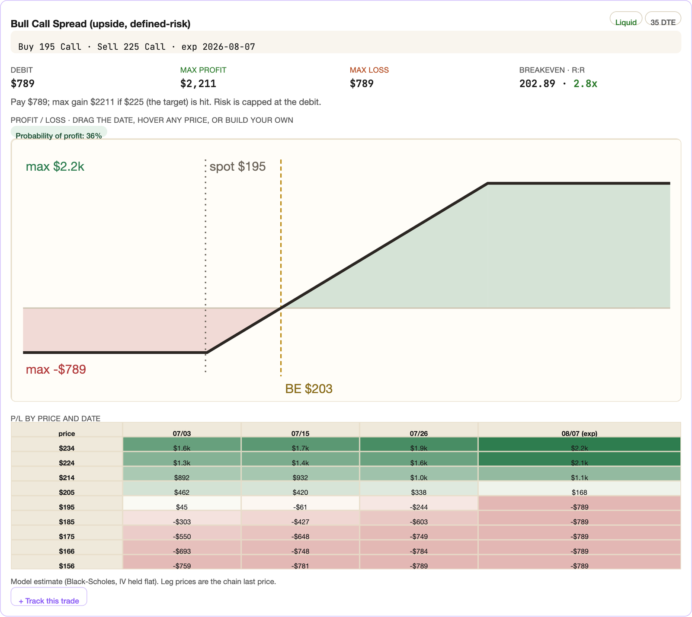

Email de lancement, 4 versions + notes Substack
Le même email jour J (dim 5 juil), sous 4 angles. Tu en choisis un. Sous chaque email, sa note Substack à publier le même jour pour amener les gens vers le post. Même prix, même offre, même deadline partout. Ta voix, zéro tic IA.
https://philosopherinvestor.substack.com/6d349d41. Les lecteurs US voient les $, les autres voient leur devise convertie (base USD confirmée).
Version 1 · Le problème valeur sûre
Ouvre sur la douleur du lecteur (trop de noms, tu achètes trop tard), puis la visite guidée complète. La plus classique, la plus vendeuse. Prends celle-ci si tu veux jouer safe.
A: The app is live (founding price, limited time)
B: I'm opening the engine behind the newsletter
C: Everything I use to trade, now yours
Most mornings, the market hands you the same problem.
Thousands of names move at once. The headlines tell you what is hot, never what to do about it. By the time a setup looks obvious, the move already happened, and you are buying it late, near the top, on a gut call. You scan for an hour and still miss the one trade that mattered.
I know it because I lived it. For two years I have written this newsletter with numbers I pull by hand, name by name, late into the night. It worked, but it did not scale. There are only so many charts one person can read before the open.
So I built the machine I always wanted. Today I am opening it to you. Here is the tour, piece by piece, the same way I use it.
The morning board. Every night after the close, the engine reads the whole US market, 12,000+ names, and runs a dozen tested setups on it: dip buys, breakouts, momentum leaders, squeezes, unusual options flow. What fits comes out ranked, each name carrying a conviction score, its levels, and a plain read of why it is there. Then real traders go over what the machine flags and throw out the noise the numbers miss. You wake up to a short board instead of a 12,000-name haystack. Five minutes with your coffee and you know where to look before the open.
[ IMAGE 1 ]
The name page. Type any ticker and you get the whole story on one screen. A setup score and a fundamentals score, each out of 100, so you see at a glance whether the chart and the business agree. The support and resistance that matter drawn on the chart, including the price where the idea is wrong. And the catalysts that actually moved the stock, each with its source and date.
[ IMAGE 2 ]
The money. This is the part most people never see. The named funds adding or trimming the stock, from their 13F filings (an inference, since filings lag). Where the options premium leans. The insider buys and sells. The walls where dealers carry gamma, the levels that pin or repel price into expiry. The footprints the big players leave once their work is done, gathered on one screen.
[ IMAGE 3 ]
The rest of the toolkit. Paste your book and get a read on every line: trim, hold, add or cut. A calculator that sizes each trade for your account. A trade structurer that turns an idea into a defined-risk options structure: the legs, the cost, max profit, max loss, breakeven. A watchlist with price alerts, so your names come to you when they hit their zone. And themes, sectors and commodities to read the market by story.
[ IMAGE 4 ]
Here is my own routine, so you can picture yours. Before the open I read the board and pick the two or three names that fit my style. I open each one, check that the scores agree, see where the level sits, and decide what I would pay. Then I set the alert and close the laptop. When it fires, I already know what to do, because the plan was made while the market was closed and my head was clear.
You are paying for two things. The hours you would lose scanning the market by hand. And the conviction to act when a setup is finally worth it, because you can see the same kind of data the big desks run on, read and ranked for you overnight.
One honest word. This is a tool to think with, and it will not print money on its own. The edge is tested across years of market history, and it still misses on plenty of names. That is exactly why every read leads with where it is wrong. You bring the judgment. The app brings the work.
Nothing changes with the newsletter itself. I keep writing every issue myself, same as before. The app is the engine underneath, there for you between issues.
And it keeps growing. I ship improvements every week, and members get each one as it lands. What you see today is the starting point.
Here is the founding offer. For a limited time you get 50% off your first year. That is $100 for the year instead of $200, around $8.33 a month, less than one good trade. When it ends on Sunday, July 19, the price goes back to $200 a year.
[ BUTTON: Claim the founding price → https://philosopherinvestor.substack.com/6d349d41 ]
You can cancel any time, in one click, straight from your account. So the risk is small and the door is open.
I built this for the way I trade. If that is you, come in.
Daniel
P.S. The founding price is the lowest this will ever be. It ends Sunday, July 19, and it does not come back. If you have read me this long, you already know whether this is for you.
Captures, dans l'ordre : [1] board · [2] name page · [3] smart money · [4] structurer.
For two years I pulled every number in this newsletter by hand, name by name, late into the night.
Today I am opening the machine I built to do it at scale. Every night it reads the whole US market and hands you the names worth trading before the open.
Founding price, 50% off the first year, until July 19.
Version 2 · Construit avec toi reco
L'angle que tu voulais : 4 mois de travail, façonné par les retours de ceux qui te lisent, « notre app », l'envie d'aller plus loin ensemble. Le plus chaleureux, le plus toi. Idéal si tes lecteurs te connaissent déjà.
A: I built this for you. Today it's yours.
B: Four months in the making. The app is live.
C: The tool I always wanted, now open to you
Four months ago I started building something, and today I am handing it to you.
For two years I have written this newsletter the hard way: every number pulled by hand, name by name, late into the night. It worked, but one person can only read so many charts before the open. So I built the machine I always wanted, the one that does the grunt work while I sleep.
I did not do it alone. Along the way I asked the people who read me, the ones who know how I think and how I trade, what they actually needed. You told me what you use, what you skip, where you get stuck. This app is shaped around those answers. That is why I keep calling it ours.
Here is what it does, the same way I use it every morning.
The morning board. Every night after the close, the engine reads the whole US market, 12,000+ names, and runs a dozen tested setups on it: dip buys, breakouts, momentum leaders, squeezes, unusual options flow. What fits comes out ranked, each name with a conviction score, its levels, and a plain read of why it is there. Then real traders go over what the machine flags and cut the noise. You wake up to a short board instead of a 12,000-name haystack.
[ IMAGE 1 ]
Any name, in full. Type a ticker and the whole story lands on one screen. A setup score and a fundamentals score, each out of 100, so you see at a glance whether the chart and the business agree. The levels that matter, including the price where the idea is wrong. And the money most people never see: the named funds adding or trimming (13F, an inference), where the options premium leans, the insider buys and sells.
[ IMAGE 2 ]
And the tools to act. Paste your book and get a read on every line: trim, hold, add or cut. A calculator that sizes each trade for your account. A structurer that turns an idea into a defined-risk options play, with the legs, the cost, and the breakeven. A watchlist that alerts you when your names hit their zone.
[ IMAGE 3 ]
One honest word. This is a tool to think with, and it will not print money on its own. The edge is tested across years of market history, and it still misses on plenty of names. That is why every read leads with where it is wrong. You bring the judgment. The app brings the work.
And it is only the start. I ship improvements every week, and members get each one as it lands. I want to take this a lot further, in exactly this direction, with you.
Nothing changes with the newsletter. I keep writing every issue myself, same as before. The app is the engine underneath, there for you between issues.
Here is the founding offer. For a limited time you get 50% off your first year. That is $100 for the year instead of $200, around $8.33 a month, less than one good trade. When it ends on Sunday, July 19, the price goes back to $200 a year.
[ BUTTON: Claim the founding price → https://philosopherinvestor.substack.com/6d349d41 ]
You can cancel any time, in one click. So the risk is small and the door is open.
I built this for the way I trade, with the people who trade like me. If that is you, come in.
Daniel
P.S. The founding price is the lowest this will ever be. It ends Sunday, July 19, and it does not come back.
Captures, dans l'ordre : [1] board · [2] name page · [3] structurer.
Four months of building. Today it goes live.
The app behind this newsletter reads 12,000+ US stocks every night and hands you the handful worth a look before the open. I built it around what you told me you actually need, so I keep calling it ours.
Founding price for the launch, half off year one, until July 19.
Version 3 · Ma matinée
Tu mets le lecteur dans ta peau à 6h du matin : café, un écran, les noms triés pendant la nuit. On voit l'app à travers ta routine réelle. Concret, immersif, montre l'usage plutôt que la liste de features.
A: This is how my morning works now
B: Come see what I look at before the open
C: Five minutes, one screen, before the bell
It is 6am. Coffee. The market opens in a few hours, and for once I am not scrambling.
On my screen is a short list of names, ranked and waiting for me. Just the handful worth my attention this morning, each with its levels and a plain read of why it is there. Overnight, while I slept, the engine read the entire US market, 12,000+ names, ran a dozen tested setups on it, and did the sorting. Then real traders cut the noise the numbers miss.
That screen is the app I built, and today I am opening it to you. Let me walk you through my morning with it.
I start with the board. Five minutes with my coffee and I know where to look. Dip buys, breakouts, momentum leaders, squeezes, unusual options flow, all ranked by conviction. The 12,000-name haystack is already a short list.
[ IMAGE 1 ]
Then I open the two or three names that fit my style. Type a ticker and the whole story lands on one screen: a setup score and a fundamentals score out of 100, so I see if the chart and the business agree. The levels that matter, including the price where I am wrong. The named funds adding or trimming (13F, an inference), where the options premium leans, the insider prints. The footprints the big players leave once their work is done.
[ IMAGE 2 ]
Then I decide, and I set the alert. I check the scores agree, see where the level sits, decide what I would pay, set the alert, and close the laptop. When it fires, I already know what to do, because the plan was made while the market was closed and my head was clear. The app even sizes the trade to my account and plans the exit before I enter.
That is the whole point. The work happens overnight, so your mornings are calm and your decision is already made when the move comes.
One honest word. This is a tool to think with, and it will not print money on its own. The edge is tested across years of market history, and it still misses on plenty of names. Every read leads with where it is wrong. You bring the judgment. The app brings the work.
Nothing changes with the newsletter. I keep writing every issue myself. The app is the engine underneath, there for you between issues, and it gets better every week.
Here is the founding offer. For a limited time you get 50% off your first year. That is $100 for the year instead of $200, around $8.33 a month. When it ends on Sunday, July 19, the price goes back to $200 a year.
[ BUTTON: Claim the founding price → https://philosopherinvestor.substack.com/6d349d41 ]
Cancel any time, one click. The risk is small.
Come trade your mornings like this. If it is for you, come in.
Daniel
P.S. The founding price ends Sunday, July 19, and it does not come back.
Captures, dans l'ordre : [1] board · [2] name page.
Here is how my morning goes now. Coffee, one screen, the names the market handed me overnight, ranked. Five minutes and I know where to look before the open.
That screen is the app, and today I am opening it.
50% off the first year until July 19.
Version 4 · Court et direct
Pour ceux qui ne liront jamais 1000 mots. Trois blocs, l'offre, terminé. À garder sous le coude si tu veux une relance sèche en milieu de semaine, ou si tu préfères un jour J bref.
A: The app is live
B: I just opened the engine behind this newsletter
C: The whole US market, ranked for you every night
I just opened the app, the engine behind this newsletter. Here is the short version.
Every night it reads the whole US market, 12,000+ names, runs a dozen tested setups, and hands you the handful worth a look before the open, each ranked with its levels and a plain read.
Open any name and the whole story lands on one screen: two scores out of 100, the levels including where the idea is wrong, and where the money is moving, the named funds (13F, an inference), the options flow, the insider prints.
Then act, with a sizer, alerts on your names, and a structurer for options plays.
It will not print money on its own. It does the overnight work so your decisions are made with a clear head, and every read leads with where it is wrong.
I keep writing the newsletter myself. The app is the engine underneath, and it grows every week.
Founding offer, limited time: 50% off your first year. $100 instead of $200, around $8.33 a month. It ends Sunday, July 19, then it is $200 a year.
[ BUTTON: Claim the founding price → https://philosopherinvestor.substack.com/6d349d41 ]
Cancel any time, one click. If it is for you, come in.
Daniel
Capture optionnelle : [board] sous le 1er bloc. La version courte se passe très bien de visuel.
The app is live.
It reads the whole US market every night and ranks what is worth trading before the open. Open any name and get the whole story on one screen.
Founding price, 50% off year one, ends July 19.
Visuels · à glisser aux marqueurs


